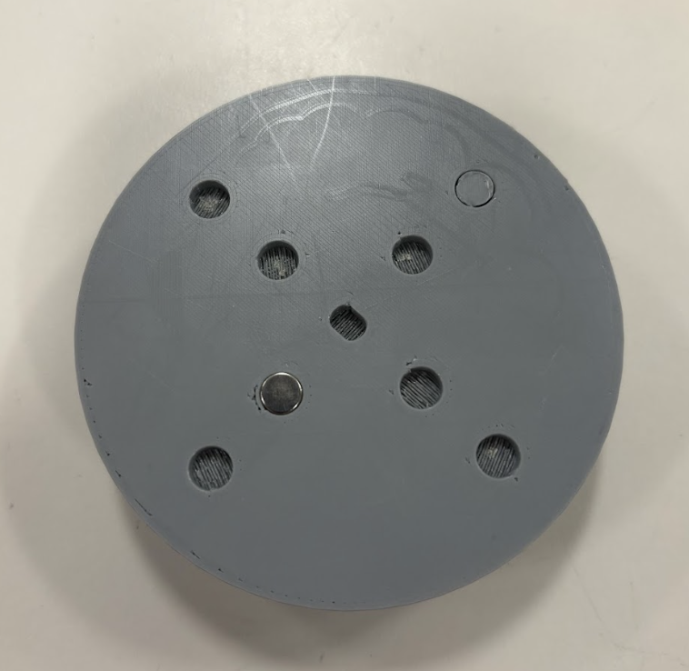
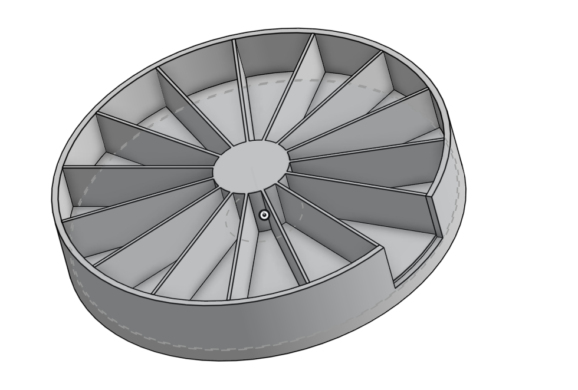
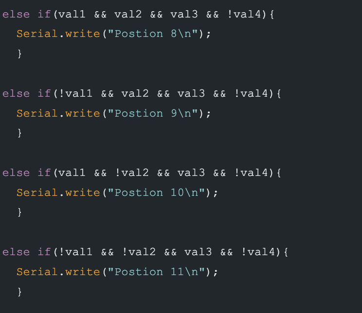

Cycle Process for Timed Pill Dispenser
Our project addresses the challenge that older adults with dementia or memory-related conditions face when trying to manage their medications independently. Many struggle to remember when to take their pills or whether they have already taken them, which can lead to missed doses or double dosing. Based on this, our needs statement is that users require a system that not only organizes their medication clearly but also supports them in taking the correct pills at the correct time without relying heavily on a caregiver. To guide our design, we focused on three main principles: simplicity, reliability, and automation. The device must be easy to understand and use, consistently perform without errors, and reduce the need for memory through automated assistance. Success for our design would mean that the device can accurately stop at the correct compartment every time, dispense the correct pills, and remain easy for users to load and interact with. We plan to measure this through testing stopping accuracy, consistency over repeated rotations, and how easily a user can interact with the system. If the device does not meet these expectations, we will adjust key elements such as compartment spacing, magnet placement, or control logic to improve performance.
Cycle 1

The goal of this cycle was to create a simple physical prototype to test the core concept of a rotating pill dispenser. We wanted to understand how a circular compartment system behaves in terms of movement, spacing, and ease of access before committing to a more complex design.
- Design initial compartment model in CAD
- Keep design simple for fast prototyping
- Observe structural stability and usability
- Test rotation and accessibility of compartments
What We Actually Accomplished : We built a 4-compartment prototype to quickly test the idea without overcomplicating the design. This helped us confirm that a rotating system is practical and that users can access compartments easily. However, it also showed that fewer compartments limit functionality and that alignment between sections needs to be precise. This means our design direction is valid, but requires more compartments and improved accuracy for real use.
Cycle 2

The goal of this cycle was to refine the design by expanding it into a full 15-compartment system, while also planning for features like day/night separation and a refill section. We also aimed to incorporate a stopping mechanism into the structure itself.
- Redesign model with 15 compartments
- Include center section for magnet placement
- Ensure equal spacing for accurate rotation
- Evaluate design feasibility
What We Actually Accomplished : We completed a detailed 15-compartment CAD design with evenly spaced sections and a designated refill slot. We also added central holes for magnets, which are critical for controlling where the system stops. While it hasn’t been printed yet, this step is important because it translates the concept into a design that can support automation and precise positioning.
Cycle 3
